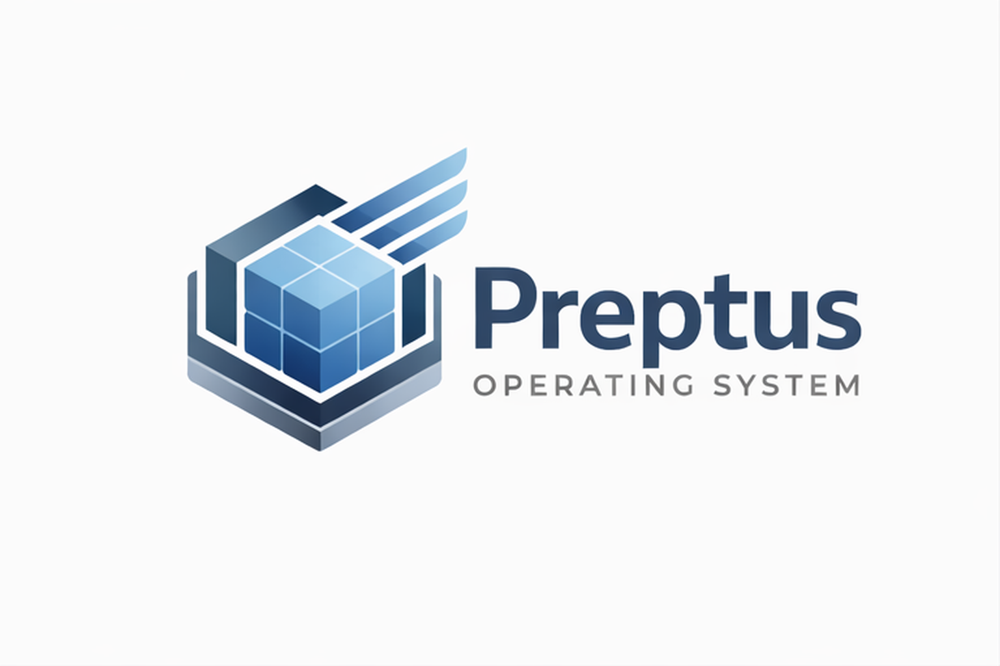

Home
Why
Packages
Diagnostic
Results
Your responses suggest opportunities to improve operational clarity and control.
What we typically see at this stage
Recommended next step
Save My Results
Have Preptus Review My Results
Submit